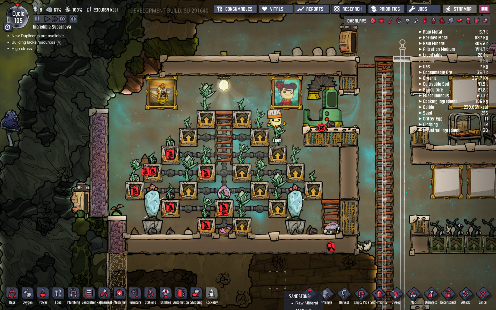
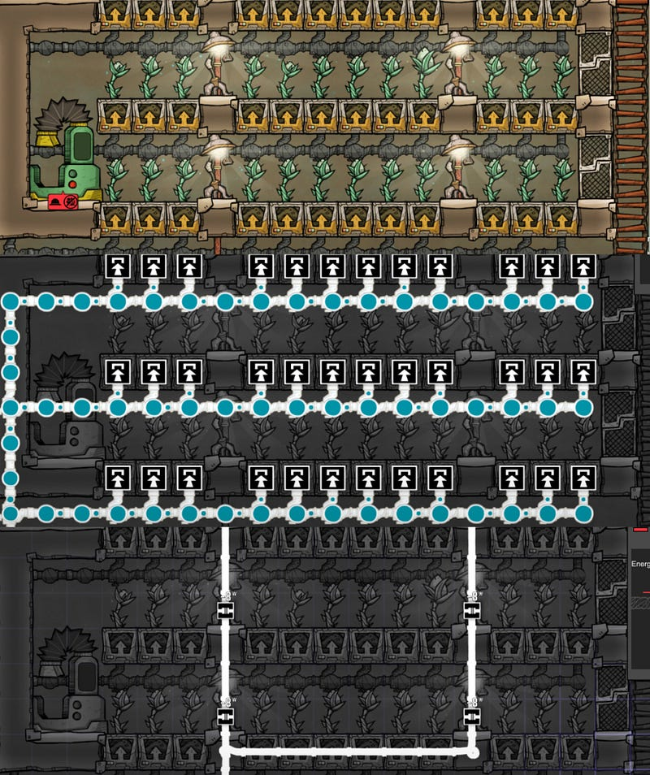
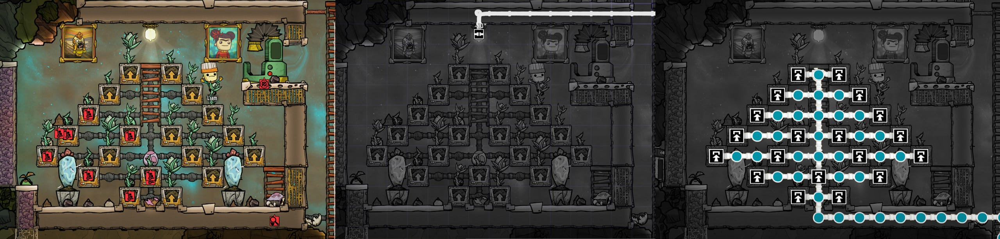

Single-Ceiling Light Bristle Berry Farm
Single-Ceiling Light Bristle Berry Farm
I used to grow bristle berries in a flat farm using one lamp per 6 berries, only until I found this super efficient single-ceiling light berry farm schematic

I got the above off of Wintermute’s Grind This Game episodes, who in turn got it from a forum post? I think. But I forgot the name and I have misplaced the episode where he talks about it. So, apologies in advance for the person who came up with it: I will surely credit it to you when I find out.
Anyway, this is a typical setup that I used to create before learning the above form. It’s straight forward, I’m sure you’ve done it before.

It’s 24 berries in 66 tiles space, consuming 32 watts.
Now there are a few things I don’t like about this:
Spacing
In my old setup when/if the need arises, it’s hard to place a wheezewort. Wheezeworts require a flower pot, so it naturally aligns 3 tiles high. I condensed this as much as possible, so there’s no room.
If I make the rooms 3 tiles high, then this room, which already has the size of 66, adds 14 more tiles per row, totaling in an increase of 28. 66+28 = 94.
But we also need to make room for wheezeworts. There’s a possibility to add a tile above the Farming Station, but what if the heat is coming from the opposite side. meh.
Energy consumption
Okay, so 4 lamps are not that much. It’s a mere 8 watts per lamp, so 32 watts total. But there’s the cost of wiring and what not.
Piping/wiring
It’s… just annoying.
The New Design
And then comes the new design.

17 berries in about 89 tiles. We lost some space efficiency, but gained significantly in terms of ease of piping and wiring, and energy consumption. Pipes are straight. Wiring is minimal, and we only need to install 1 ceiling light.
The spacing allows us to have two paintings, and two wheezeworts in strategically significant locations.